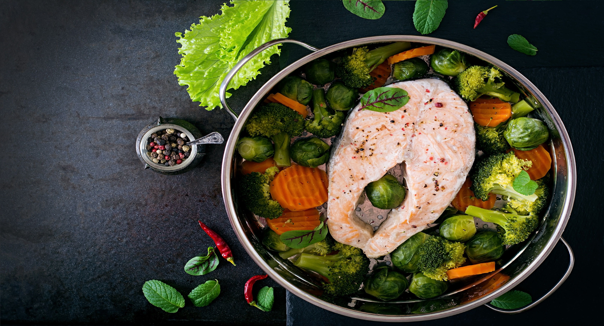

Title: meat recipe number: 11
author: Kamil Kowalczyk
author: Kamil Kowalczyk

In a small bowl, combine the agave nectar, vinegar, olive oil and . cup water. Set aside.
Combine the cinnamon, black pepper, thyme, allspice, cayenne, nutmeg, garlic powder, onion powder, and salt in a small bowl. Place a large, flat-bottomed skillet over a medium-high heat. Once hot, add the spice mixture and stir for about 2 minutes, or until fragrant. Pour the agave mixture into the skillet and heat for 30 seconds. Add the jackfruit and stir to break up the jackfruit as it softens. Heat through, about 3 minutes, and set aside.
Heat a grill pan over high heat and grill the pineapple rings until lightly blackened, about 3 minutes per side. (If you don’t have a grill pan, just use a regular heavy-bottomed skillet and sear them for a couple of minutes on each side.)
Warm the tortillas on the stove or in the microwave. Build your tacos using the jackfruit, grilled pineapple, cabbage, cherry tomatoes, sour cream, and cilantro. Serve with wedges of lime.
Combine the cinnamon, black pepper, thyme, allspice, cayenne, nutmeg, garlic powder, onion powder, and salt in a small bowl. Place a large, flat-bottomed skillet over a medium-high heat. Once hot, add the spice mixture and stir for about 2 minutes, or until fragrant. Pour the agave mixture into the skillet and heat for 30 seconds. Add the jackfruit and stir to break up the jackfruit as it softens. Heat through, about 3 minutes, and set aside.
Heat a grill pan over high heat and grill the pineapple rings until lightly blackened, about 3 minutes per side. (If you don’t have a grill pan, just use a regular heavy-bottomed skillet and sear them for a couple of minutes on each side.)
Warm the tortillas on the stove or in the microwave. Build your tacos using the jackfruit, grilled pineapple, cabbage, cherry tomatoes, sour cream, and cilantro. Serve with wedges of lime.